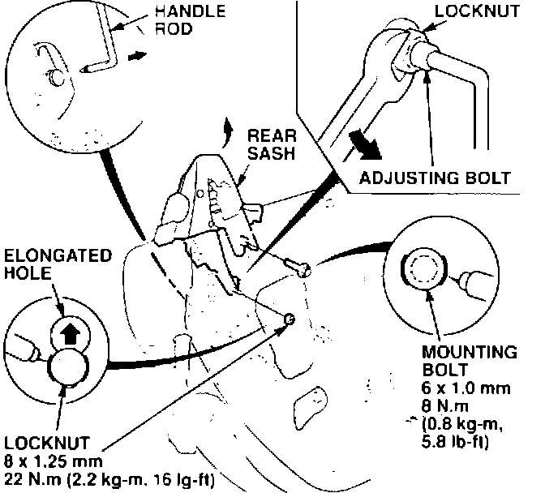
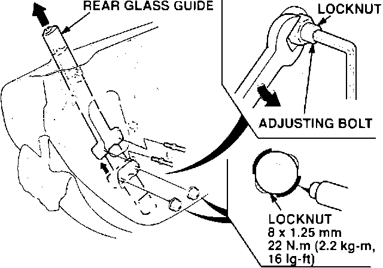
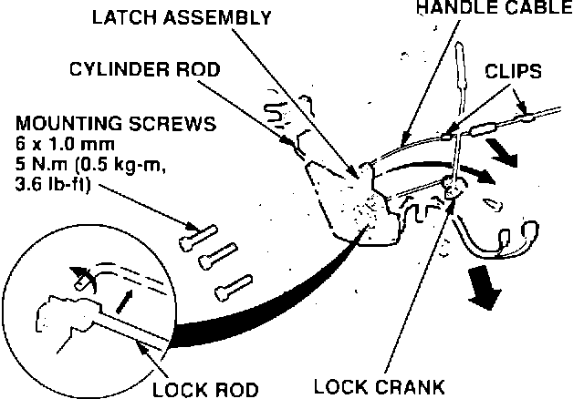
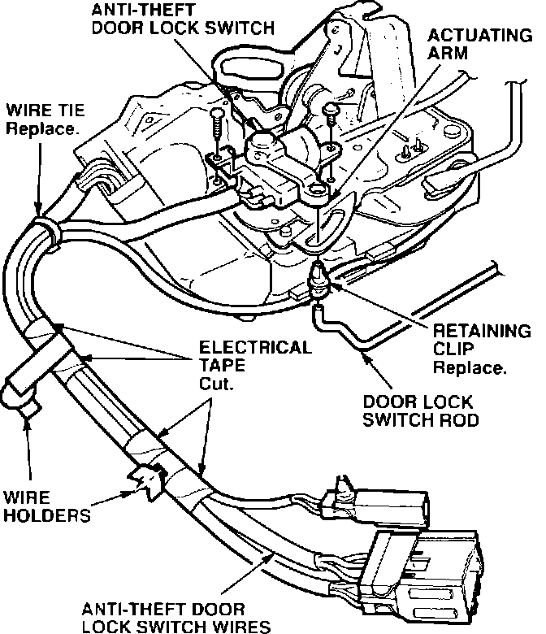
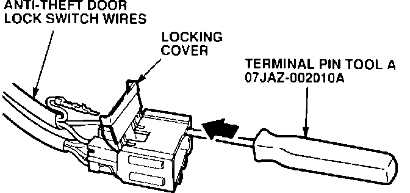
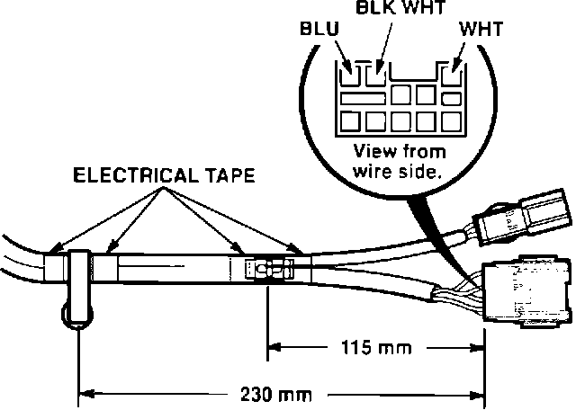

Security System - Unlocking either Door Sets Off Alarm
BULLETIN NO.93-007
YEAR
1991-93
MODEL
NSX
VIN APPLICATION
ALL
April 13, 1993
NSX: Unlocking the Door Sets Off the Security Alarm
SYMPTOM
Unlocking either door sets off the alarm.
PROBABLE CAUSE
Oxidation on the contacts of the anti-theft door lock switch prevents the security system control unit from receiving the "unlocked door" signal.
CORRECTIVE ACTION
Replace the anti-theft door lock switch with the parts listed under PARTS INFORMATION.

1. Remove the door panel from the affected door. Refer to Section 20 of the service manual.
2. Connect the panel switch to raise the window.
3. Scribe a line around the rear sash mounting bolt and the adjusting bolt locknut.
4. Remove the mounting bolt. Hold the adjusting bolt with a hex wrench and remove the locknut.
5. Lift up on the rear sash until the adjusting bolt aligns with the top of the elongated hole. Remove the adjusting bolt while counting the number of turns needed to remove the bolt from the rear sash. Write down the number of turns for reference later. Remove the rear sash and disconnect the handle rod.

6. Scribe a line around each adjusting bolt locknut for the rear glass guide.
7. Hold each adjusting bolt with a hex wrench, and remove the locknut.
8. Lift up on the rear glass guide until the adjusting bolts align with the access hole. Remove the adjusting bolts by counting the number of turns needed to remove the bolts from the glass guide. Write down the number of turns for each adjusting bolt for reference later. Remove the guide from the door.

9. Disconnect the door lock cylinder rod from the door lock cylinder; then disconnect the lock rod from the latch assembly, and remove the lock crank.
10. Remove the handle cable and the mounting screws from the latch assembly. Remove the latch assembly through the access hole in the door.

11. Remove the door lock switch rod from the retaining clip. Remove the retaining clip from the actuating arm, and discard the clip.
12. Remove the two mounting screws, then remove the old anti-theft door lock switch from the latch assembly.
13. Cut the wire tie and the electrical tape on the harness; then remove the two wire harness clips.

14. Release the locking cover from the 8-pin connector shell. Insert the special tool into the connector as shown. Lift up on the wire terminal locking tabs to remove the three anti-theft door lock switch wires.
15. Install the new anti-theft door lock switch on the latch assembly. Use a new retaining clip when installing the door lock switch rod.
16. Place a new wire tie around the harnesses, insert the wires into the connector shell, and close the locking cover.

17. Position the two wire harness clips as shown. Tape the clips in place with electrical tape.
18. Reinstall the latch assembly in reverse order of disassembly. Make note of the following:
^ Install the rear glass guide adjusting bolts into the glass guide the same number of turns recorded for removal. Be sure to hold the adjusting bolt while tightening the locknut.
^ Install the rear sash adjusting bolt the same number of turns recorded for removal. Be sure to hold the adjusting bolt while tightening the locknut.
19. After reinstallation, temporarily install the door panel, and connect the connectors. Test the door latch, door lock, windows, and security system for proper operation.
20. If OK, install the door panel: refer to Section 20 of the service manual.
PARTS INFORMATION
Left Anti-theft Door Lock Switch: P/N 72154-SL0-A01
Right Anti-theft Door Lock Switch: P/N 72114-SL0-A01
Holder/Retaining Clip: P/N 72137-SS0-003
WARRANTY CLAIM INFORMATION
In warranty:
The normal warranty applies.
Out of warranty:
Any repair performed after warranty expiration may be eligible for goodwill consideration by the District Service Manager. You must request consideration, and get the DSM's decision, before starting work.
Operation number: Left 748150
Right 749150
Flat rate time: 1.7 hours per door
Failed P/N: P/N 72154-SL0-A01
Defect code: 072
Contention code: B99